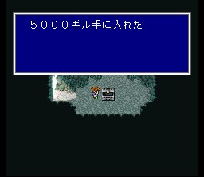
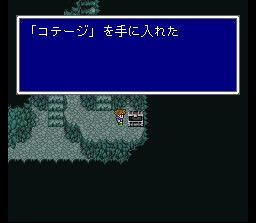
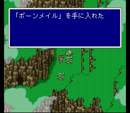
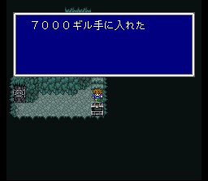
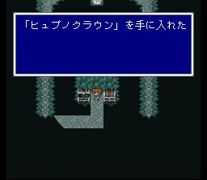
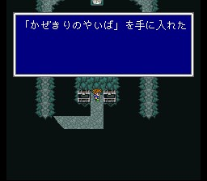
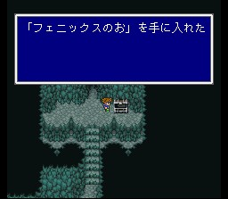

비룡의 계곡
북쪽으로 계속 가면 비룡의 계곡이 나옵니다. 이 곳은 FF5 플레이하시는 분들이 가장 길 찾기 헷갈려하는 곳입니다. 저도 할 때마다 헤매는데.. 도둑의 숨은길 찾기도 별 소용이 없는 곳이라서.. 아무튼 자~알 찾아보시라는 말씀밖에는.. 이 곳은 언데드들이 자주 출현하니 케루브에서 방금 배운 레퀴엠을 애용하시면 좋습니다. 아이템들 빠지지 말고 챙기시고.. 뼈다귀들 중 하나를 조사하면 본메일이라는 최강 갑옷이 나옵니다. 착용하면 언데드가 되는 점이 다소 귀찮지만.. 드리피에게서 매직해머를 배울 수 있습니다.
정상에 가면 비룡초가 마물화가 된 것을 볼 수 있습니다. 이 녀석들은 공격은 별로인데 각종 스테이터스 공격으로 귀찮게 합니다. 타이탄과 인술 등 강력한 공격으로 속전속결로 잡아버립시다. 그라비데도 걸립니다.
잡았으면 비룡초를 얻고 다시 원래 길을 돌아 나갑시다. (귀찮지요)
나오는 길에 간간히 등장하던 고렘이 마물들에게 습격을 당하고 있습니다.
레퀴엠으로 마물들을 처리하면 고렘이 고맙다며 동료가 됩니다. 소환수 고렘을 얻습니다.